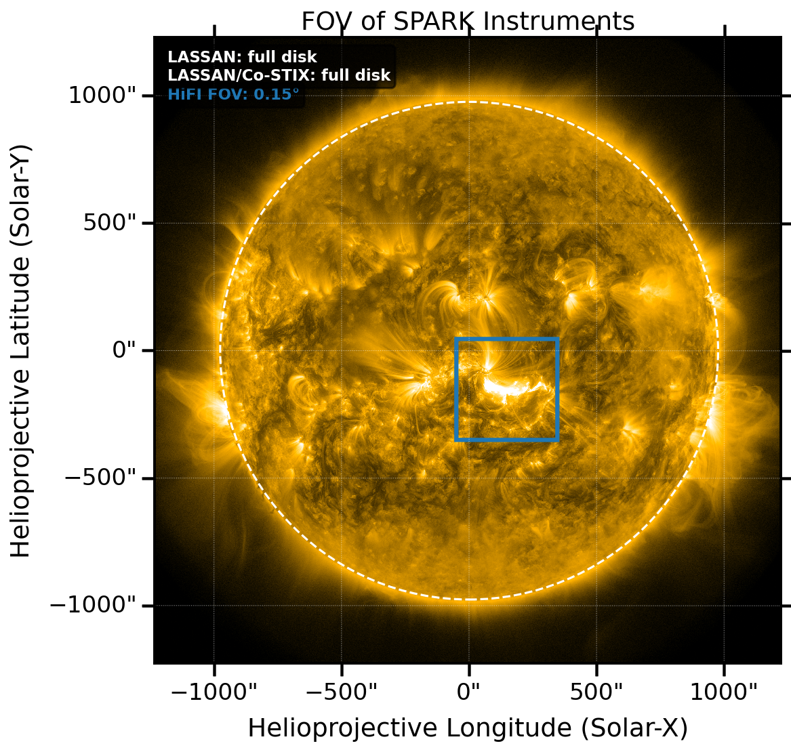
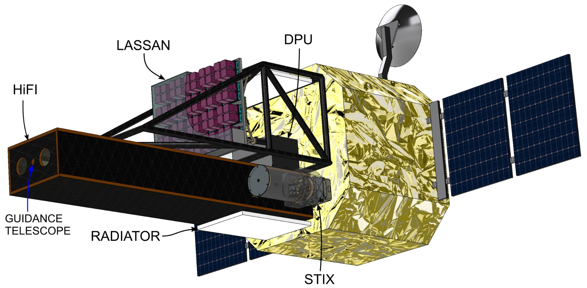

Continuous monitoring
LASSAN operates in a nominal full-disk observing mode, delivering continuous X-ray and γ-ray spectroscopy and context imaging.
Mission concept
SPARK combines continuous high-energy monitoring with targeted, flare-responsive EUV imaging from a Sun–Earth L1 orbit.
Mission profile
The baseline mission uses a halo or Lissajous orbit around the Sun–Earth L1 point, maximising uninterrupted solar observing and providing a low, stable radiation background for LASSAN.
LASSAN continuously monitors the full solar disk. HiFI targets selected active regions and switches to high-cadence flare observations when triggered by high-energy activity.
Ariane 62 launch from Kourou and transfer to L1
Commissioning and start of nominal operations
Nominal mission during the rise of Solar Cycle 27
Extended mission through peak activity
Mission geometry

Why this matters: This observing geometry maximises flare capture while preserving HiFI’s high spatial resolution.

Why this matters: The configuration illustrates the combined observatory concept rather than a single-instrument mission.
Observing strategy
LASSAN operates in a nominal full-disk observing mode, delivering continuous X-ray and γ-ray spectroscopy and context imaging.
Real-time flare flags and coarse localisation guide HiFI data selection and high-cadence response.
A dedicated science planner selects HiFI targets and observing sequences to maximise flare capture and support community campaigns.
Mission architecture
Next step
See how LASSAN and HiFI provide the particle and plasma measurements required by the science case.